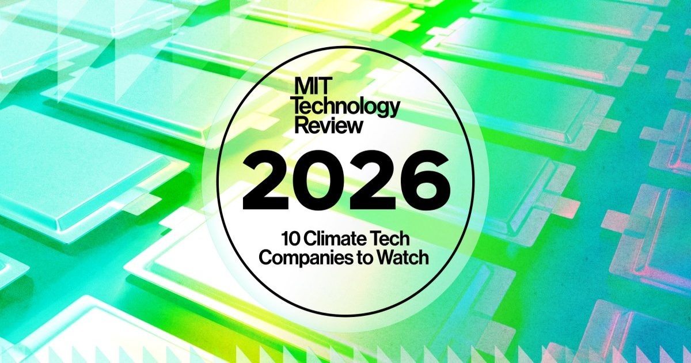

Скачать: климатические технологические компании для наблюдения и проблема обнаружения ИИ
Это сегодняшнее издание The Download, нашего ежедневного информационного бюллетеня, в котором представлена ежедневная доза того, что происходит в мире технологий.
Скоро: наш список компаний по климатическим технологиям 2026 года, за которыми стоит следить: планета приближается к 1,5° C потепления, климатическая политика распутывается, а Big Tech отступает от своих климатических амбиций...